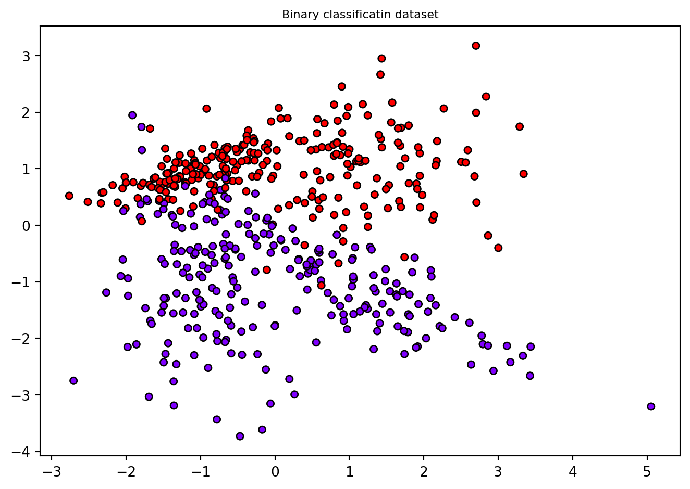
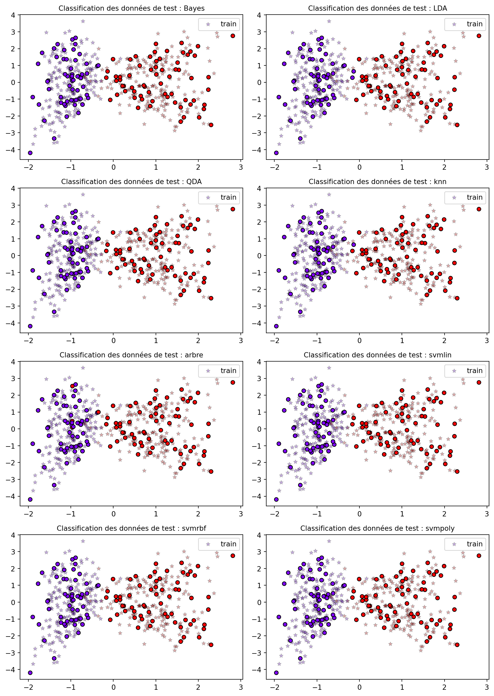
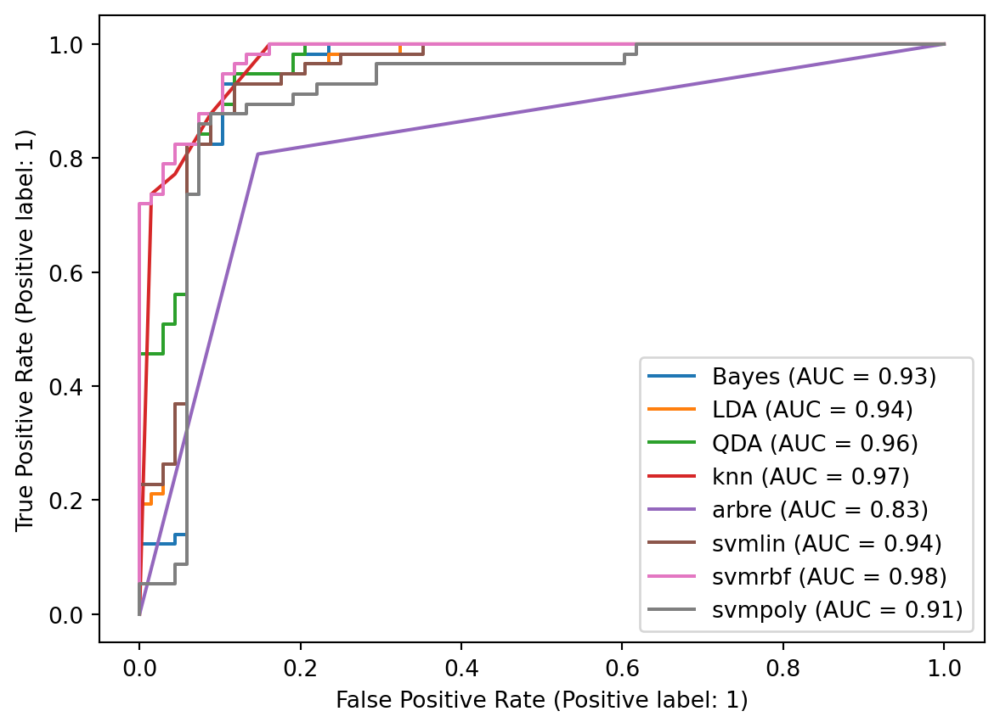
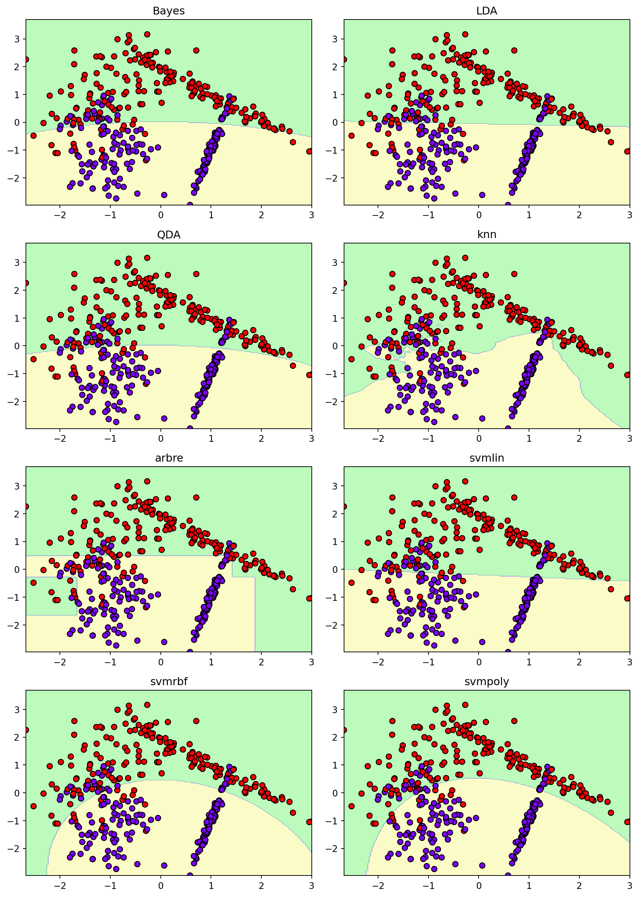

from sklearn.datasets import make_classification
from sklearn.model_selection import train_test_split
import matplotlib.pyplot as plt
from matplotlib.colors import ListedColormap
import numpy as np
import warnings
warnings.filterwarnings("ignore")
plt.title("Binary classificatin dataset", fontsize="small")
X, Y = make_classification(n_samples=500, n_features=2, n_redundant=0, n_informative=2)
plt.scatter(X[:, 0], X[:, 1], marker="o", c=Y, s=25, edgecolor="k",cmap=plt.cm.rainbow)
plt.tight_layout()
X_train, X_test, y_train, y_test = train_test_split(X,Y,test_size=0.25,shuffle=True)
from sklearn.naive_bayes import GaussianNB
from sklearn.discriminant_analysis import LinearDiscriminantAnalysis,QuadraticDiscriminantAnalysis
from sklearn.neighbors import KNeighborsClassifier
from sklearn.tree import DecisionTreeClassifier
from sklearn.svm import SVC,LinearSVC
def affiche(X,y,met,title):
met.fit(X_train,y_train)
y_predict = met.predict(X_test)
fig, axs = plt.subplots(1, 2, figsize=(10, 4))
axs[0].scatter(X[:, 0], X[:, 1], marker="o", c=Y, s=25, cmap=plt.cm.rainbow,edgecolor="k")
axs[0].set_title('Données',fontsize=10)
axs[1].scatter(X_train[:, 0], X_train[:, 1],c = y_train, s=30,marker='*', cmap=plt.cm.rainbow,edgecolor="k",alpha=0.25,label='train')
axs[1].scatter(X_test[:, 0], X_test[:, 1],c = y_predict, s=30, cmap=plt.cm.rainbow,edgecolor="k")
axs[1].set_title('Test classification : '+title,fontsize=10)
axs[1].legend(loc='best')
plt.tight_layout()
def decision(modele, X, y, title,ax,axes=[-1.5, 2.5, -1, 1.5], alpha=0.5):
x1s = np.linspace(axes[0], axes[1], 200)
x2s = np.linspace(axes[2], axes[3], 200)
x1, x2 = np.meshgrid(x1s, x2s)
X_new = np.c_[x1.ravel(), x2.ravel()]
y_pred = modele.predict(X_new).reshape(x1.shape)
map = ListedColormap(['#fafab0','#9898ff','#a0faa0'])
ax.contourf(x1, x2, y_pred, alpha=0.7, cmap=map)
ax.scatter(X[:, 0], X[:, 1], c=y, cmap=plt.cm.rainbow,edgecolors='k')
ax.set_title(title)
##### Classifiers without hyperparameter optimization
classifieurs = {'Bayes':[GaussianNB(),0,0],
'LDA':[LinearDiscriminantAnalysis(solver='eigen'),0,1],
'QDA':[QuadraticDiscriminantAnalysis(),1,0],
'knn':[KNeighborsClassifier(),1,1],
'arbre':[DecisionTreeClassifier(),2,0],
'svmlin':[LinearSVC(dual=True),2,1],
'svmrbf':[SVC(kernel='rbf'),3,0],
'svmpoly':[SVC(kernel='poly'),3,1]
}
fig, axs = plt.subplots(4, 2,figsize=(10,14))
for name,met in classifieurs.items():
classifieurs[name][0].fit(X_train,y_train)
classifieurs[name][0].fit(X_train,y_train)
ypredict = classifieurs[name][0].predict(X_test)
pos = axs[classifieurs[name][1],classifieurs[name][2]]
pos.scatter(X_train[:, 0], X_train[:, 1],c = y_train, s=30,marker='*', cmap=plt.cm.rainbow,edgecolor="k",alpha=0.25,label='train')
pos.scatter(X_test[:, 0], X_test[:, 1],c = ypredict, s=30, cmap=plt.cm.rainbow,edgecolor="k")
pos.set_title('Classification des données de test : '+name,fontsize=10)
pos.legend(loc='best')
plt.tight_layout()
##### Hyperparameter optimization using CV and GridSearch
from sklearn.model_selection import GridSearchCV
param = {
'Bayes':[{'var_smoothing':[1e-9,1e-5,0.1]}],
'LDA':[{'shrinkage':[0,0.5,1]}],
'QDA':[{'tol':[1e-4,1e-2,1e-1]}],
'knn':[{'weights': ["uniform", "distance"], 'n_neighbors': [3, 5, 7]}],
'arbre':[{'criterion': ['entropy', 'gini'], 'max_depth':np.arange(1, 10),'min_samples_leaf': np.arange(1, 10)}],
'svmlin':{'C':np.arange(0.01,100,10)},
'svmrbf':{"C": [1e-1, 1e1, 1e2,1e4],"gamma": [0.01, 0.1,0.5, 1,10]},
'svmpoly':{"degree": np.arange(1,10),"coef0": np.arange(-5,5)}
}
predict = {'Bayes':[],
'LDA':[],
'QDA':[],
'knn':[],
'arbre':[],
'svmlin':[],
'svmrbf':[],
'svmpoly':[],
}
bestalgo = {'Bayes':[],
'LDA':[],
'QDA':[],
'knn':[],
'arbre':[],
'svmlin':[],
'svmrbf':[],
'svmpoly':[],
}
for name,met in classifieurs.items():
gs = GridSearchCV(met[0], param[name], cv=5, verbose=1, n_jobs=-1)
gs.fit(X_train, y_train)
print("est parameters for "+ name ,gs.best_params_)
bestalgo[name] = gs.best_estimator_
bestalgo[name].fit(X_train,y_train)
predict[name] = bestalgo[name].predict(X_test)
##### Measures of performance
from sklearn.metrics import classification_report
for key,values in predict.items():
print("*** Results for ", key,' ***')
print(classification_report(y_test, values))
from sklearn.metrics import RocCurveDisplay, roc_curve
fig,ax = plt.subplots()
for key,values in predict.items():
RocCurveDisplay.from_estimator(classifieurs[key][0], X_test, y_test, ax=ax, name=key)
fig, axs = plt.subplots(4, 2,figsize=(10,14))
for name,met in classifieurs.items():
bestalgo[name].fit(X_train,y_train)
bestalgo[name].fit(X_train,y_train)
predict[name] = bestalgo[name].predict(X_test)
pos = axs[classifieurs[name][1],classifieurs[name][2]]
decision(bestalgo[name], X_train, y_train,title=name, ax=pos,axes=[np.min(X[:,0]), np.max(X[:,0]), np.min(X[:,1]), np.max(X[:,1])])
plt.tight_layout()Fitting 5 folds for each of 3 candidates, totalling 15 fits
est parameters for Bayes {'var_smoothing': 1e-09}
Fitting 5 folds for each of 3 candidates, totalling 15 fits
est parameters for LDA {'shrinkage': 1}
Fitting 5 folds for each of 3 candidates, totalling 15 fits
est parameters for QDA {'tol': 0.0001}
Fitting 5 folds for each of 6 candidates, totalling 30 fits
est parameters for knn {'n_neighbors': 5, 'weights': 'uniform'}
Fitting 5 folds for each of 162 candidates, totalling 810 fits
est parameters for arbre {'criterion': 'entropy', 'max_depth': 7, 'min_samples_leaf': 1}
Fitting 5 folds for each of 10 candidates, totalling 50 fits
est parameters for svmlin {'C': 0.01}
Fitting 5 folds for each of 20 candidates, totalling 100 fits
est parameters for svmrbf {'C': 0.1, 'gamma': 0.5}
Fitting 5 folds for each of 90 candidates, totalling 450 fits
est parameters for svmpoly {'coef0': 1, 'degree': 5}
*** Results for Bayes ***
precision recall f1-score support
0 0.99 1.00 0.99 68
1 1.00 0.98 0.99 57
accuracy 0.99 125
macro avg 0.99 0.99 0.99 125
weighted avg 0.99 0.99 0.99 125
*** Results for LDA ***
precision recall f1-score support
0 0.99 1.00 0.99 68
1 1.00 0.98 0.99 57
accuracy 0.99 125
macro avg 0.99 0.99 0.99 125
weighted avg 0.99 0.99 0.99 125
*** Results for QDA ***
precision recall f1-score support
0 0.99 1.00 0.99 68
1 1.00 0.98 0.99 57
accuracy 0.99 125
macro avg 0.99 0.99 0.99 125
weighted avg 0.99 0.99 0.99 125
*** Results for knn ***
precision recall f1-score support
0 0.99 1.00 0.99 68
1 1.00 0.98 0.99 57
accuracy 0.99 125
macro avg 0.99 0.99 0.99 125
weighted avg 0.99 0.99 0.99 125
*** Results for arbre ***
precision recall f1-score support
0 0.97 0.99 0.98 68
1 0.98 0.96 0.97 57
accuracy 0.98 125
macro avg 0.98 0.98 0.98 125
weighted avg 0.98 0.98 0.98 125
*** Results for svmlin ***
precision recall f1-score support
0 0.99 1.00 0.99 68
1 1.00 0.98 0.99 57
accuracy 0.99 125
macro avg 0.99 0.99 0.99 125
weighted avg 0.99 0.99 0.99 125
*** Results for svmrbf ***
precision recall f1-score support
0 0.99 1.00 0.99 68
1 1.00 0.98 0.99 57
accuracy 0.99 125
macro avg 0.99 0.99 0.99 125
weighted avg 0.99 0.99 0.99 125
*** Results for svmpoly ***
precision recall f1-score support
0 0.99 1.00 0.99 68
1 1.00 0.98 0.99 57
accuracy 0.99 125
macro avg 0.99 0.99 0.99 125
weighted avg 0.99 0.99 0.99 125
/Users/vibarra/Library/Python/3.9/lib/python/site-packages/sklearn/svm/_base.py:1244: ConvergenceWarning: Liblinear failed to converge, increase the number of iterations.
warnings.warn(
/Users/vibarra/Library/Python/3.9/lib/python/site-packages/sklearn/svm/_base.py:1244: ConvergenceWarning: Liblinear failed to converge, increase the number of iterations.
warnings.warn(
/Users/vibarra/Library/Python/3.9/lib/python/site-packages/sklearn/svm/_base.py:1244: ConvergenceWarning: Liblinear failed to converge, increase the number of iterations.
warnings.warn(
/Users/vibarra/Library/Python/3.9/lib/python/site-packages/sklearn/svm/_base.py:1244: ConvergenceWarning: Liblinear failed to converge, increase the number of iterations.
warnings.warn(
/Users/vibarra/Library/Python/3.9/lib/python/site-packages/sklearn/svm/_base.py:1244: ConvergenceWarning: Liblinear failed to converge, increase the number of iterations.
warnings.warn(
/Users/vibarra/Library/Python/3.9/lib/python/site-packages/sklearn/svm/_base.py:1244: ConvergenceWarning: Liblinear failed to converge, increase the number of iterations.
warnings.warn(
/Users/vibarra/Library/Python/3.9/lib/python/site-packages/sklearn/svm/_base.py:1244: ConvergenceWarning: Liblinear failed to converge, increase the number of iterations.
warnings.warn(
/Users/vibarra/Library/Python/3.9/lib/python/site-packages/sklearn/svm/_base.py:1244: ConvergenceWarning: Liblinear failed to converge, increase the number of iterations.
warnings.warn(
/Users/vibarra/Library/Python/3.9/lib/python/site-packages/sklearn/svm/_base.py:1244: ConvergenceWarning: Liblinear failed to converge, increase the number of iterations.
warnings.warn(
/Users/vibarra/Library/Python/3.9/lib/python/site-packages/sklearn/svm/_base.py:1244: ConvergenceWarning: Liblinear failed to converge, increase the number of iterations.
warnings.warn(
/Users/vibarra/Library/Python/3.9/lib/python/site-packages/sklearn/svm/_base.py:1244: ConvergenceWarning: Liblinear failed to converge, increase the number of iterations.
warnings.warn(
/Users/vibarra/Library/Python/3.9/lib/python/site-packages/sklearn/svm/_base.py:1244: ConvergenceWarning: Liblinear failed to converge, increase the number of iterations.
warnings.warn(
/Users/vibarra/Library/Python/3.9/lib/python/site-packages/sklearn/svm/_base.py:1244: ConvergenceWarning: Liblinear failed to converge, increase the number of iterations.
warnings.warn(
/Users/vibarra/Library/Python/3.9/lib/python/site-packages/sklearn/svm/_base.py:1244: ConvergenceWarning: Liblinear failed to converge, increase the number of iterations.
warnings.warn(
/Users/vibarra/Library/Python/3.9/lib/python/site-packages/sklearn/svm/_base.py:1244: ConvergenceWarning: Liblinear failed to converge, increase the number of iterations.
warnings.warn(
/Users/vibarra/Library/Python/3.9/lib/python/site-packages/sklearn/svm/_base.py:1244: ConvergenceWarning: Liblinear failed to converge, increase the number of iterations.
warnings.warn(


